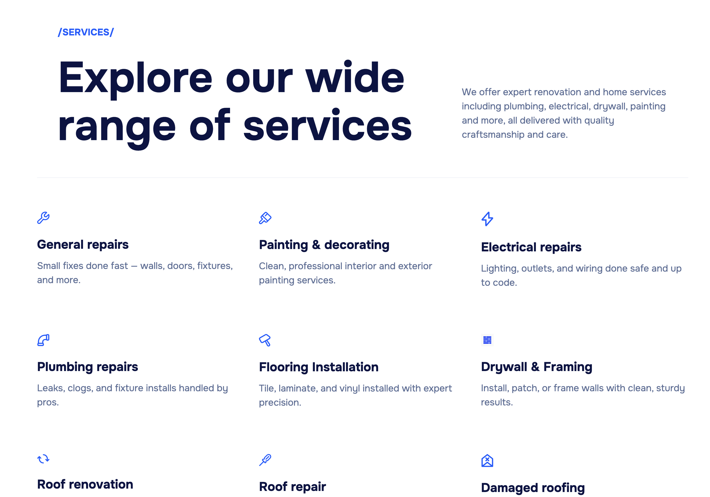
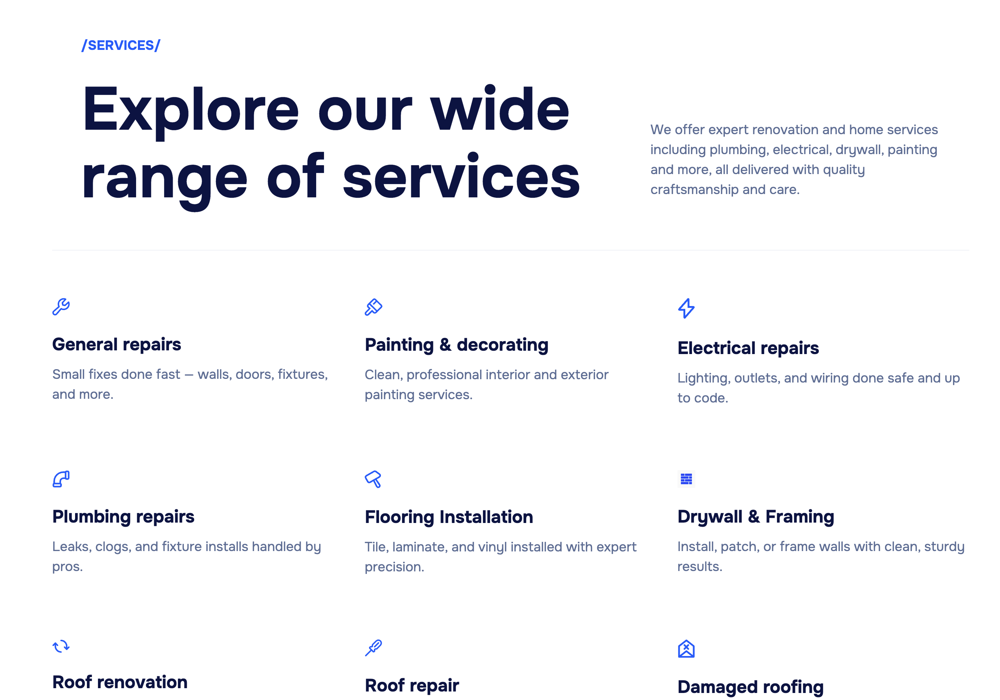

Chess Game (MATLAB)


Chess Game in MATLAB (ENGR 1181 @OSU)
A fully playable chess game built in MATLAB as part of ENGR 1181 at The Ohio State University. I implemented the logic for legal moves, rules enforcement, and turn-taking. This project emphasized algorithm design and problem-solving using matrices and conditional structures.
Key Contributions
- Designed and implemented move validation for all chess pieces.
- Enforced standard chess rules, including check and checkmate detection.
- Developed turn-based game flow for two players.
This project strengthened my ability to translate complex rules into efficient algorithms and deepened my experience with matrix-based problem solving in MATLAB.
 
